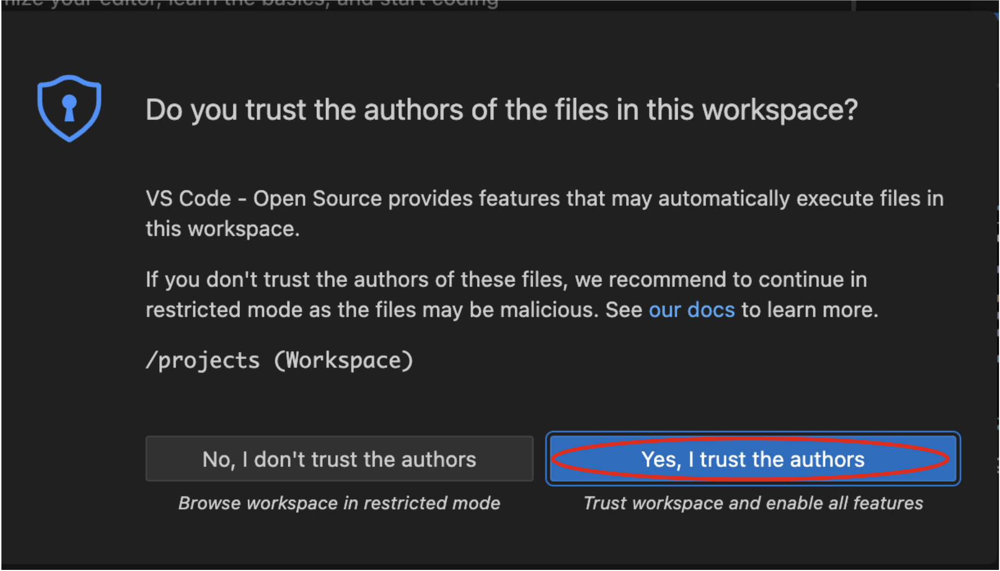

What is Quarkus?
Quarkus is a Kubernetes Native Java stack tailored for GraalVM & OpenJDK HotSpot, crafted from the best of breed Java libraries and standards. Amazingly fast boot time, incredibly low RSS memory (not just heap size!) offering near instant scale up and high density memory utilization in container orchestration platforms like Kubernetes. Quarkus uses a technique called compile time boot and offers a unified imperative and reactive programming model and a number of other developer features like Live Reload to bring real joy to your development.
Red Hat offers the fully supported Red Hat Build of Quarkus(RHBQ) with support and maintenance of Quarkus. In this workhop, you will use Quarkus to develop Kubernetes-native microservices and deploy them to OpenShift. Quarkus is one of the runtimes included in Red Hat Runtimes. Learn more about RHBQ.
Throughout this lab you’ll discover how Quarkus can make your development of cloud native apps faster and more productive.
First Step: Connect to your Developer Sandbox environment!
To run this workshop you need to provision your own Developer Sandbox environment. This you do from https://developers.redhat.com/developer-sandbox
Click the Start your sandbox for free and log in.
In the console now click Launch to access your Red Hat OpenShift environment.
This will lead you to the OpenShift console.
Select Log in with DevSandbox if the choice opens up.
Take note of the cluster details in the url of the browser. It will be something like this: https://console-openshift-console.apps.sandbox-m2.ll9k.p1.openshiftapps.com/add/ns/yourusername-dev
Look in the box at the top of this guide. If your sandbox environment is set already? If so it will look like this:
If your sandbox environment is properly set, then you can move on. If not, in the above box, enter the cluster details like this:

This will customize the links and copy/paste code for this workshop. If you accidently type the wrong details, just click the green recycle icon to reset it.
Click-to-Copy
You will see various code and command blocks throughout these exercises which can be copy/pasted directly by clicking anywhere on the block of text:
/* A sample Java snippet that you can copy/paste by clicking */
public class CopyMeDirectly {
public static void main(String[] args) {
System.out.println("You can copy this whole class with a click!");
}
}Simply click once and the whole block is copied to your clipboard, ready to be pasted with CTRL+V (or Command+V on Mac OS).
There are also Linux shell commands that can also be copied and pasted into a Terminal in your Development Environment:
echo "This is a bash shell command that you can copy/paste by clicking"Access Your Development Environment
You will be using Visual Studio Code (VS Code) based on Red Hat OpenShift Dev Spaces. Changes to files are auto-saved every few seconds, so you don’t need to explicitly save changes.
To get started, access the Dev Spaces instance through the application picker in the top menu of the OpenShift console. Or click Launch on the Red Hat Dev Spaces card where you accessed the OpenShift console.
Select Log in with OpenShift button if needed:

Select Log in with DevSandbox
|
In case you see the Authorize Access page as below, select Allow selected permissions button. 
|
Once you log in, you’ll be placed on the Create Workspace dashboard. Copy the following Git Repo URL and select Create & Open.
A new window or tab in your web browser will open automatically to showcase the progess about Starting workspace quarkus-workshop. It takes about 60 seconds to finish the process.

|
In case you see this information page, select 
|
After a few seconds, you’ll be placed in the workspace.
|
In case you see this information page, click on

|
You’ll use all of these during the course of this workshop, so keep this browser tab open throughout. If things get weird, you can simply reload the browser tab to refresh the view.
Ready? Let’s go!